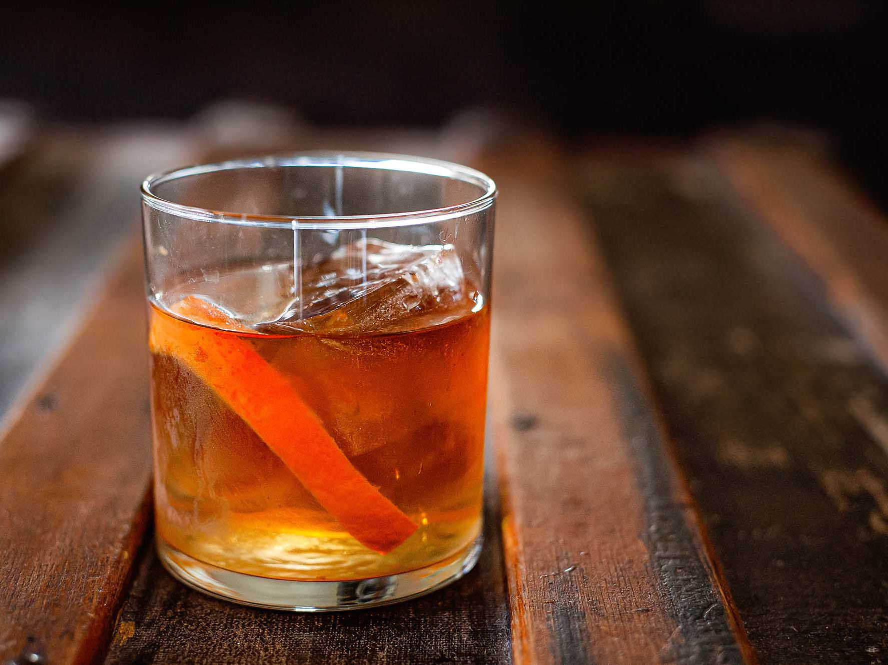

What Is An Old Fashion?
The old fashioned is a cocktail made by muddling sugar with bitters and water, adding whiskey, and garnishing with an orange slice or zest and a cocktail cherry
Ingredients
- 1 1/2 oz Bourbon or Rye Whiskey
- 1 Sugar Cube
- 2 Dashes Angostura Bitters
- Few Dashes of Dlain Water
Recipe Instructions
- Place sugar cube in old fashioned glass and saturate with bitters, add a dash of plain water.
- Muddle until dissolved.
- Fill the glass with ice cubes and add whiskey.
- Garnish with orange slice, and a cocktail cherry.
Return to top
Return to main page